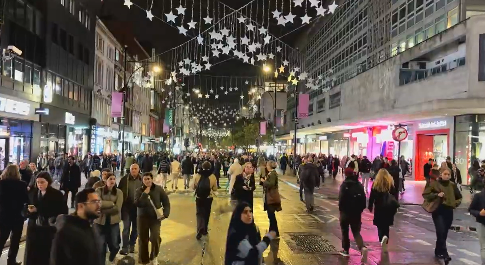

가독성을 높이기 위해 각 꼭지 제목의 폰트 크기를 줄이고, 불렛포인트 사이에 줄바꿈을 없앴습니다. 독자 여러분의 조언 부탁드립니다. cjs@okhotsk.kr

#오늘의 사진
런던의 메인 쇼핑가, 옥스포드 스트릿(2km)이 어제부터 차와 자전거를 막고 보행자 전용거리로 변경 (@BBCTomEdwards). 주변 교통 혼잡에 대한 염려도 있었으나 일단 첫날 반응은 좋다고. 내년 초까지 3개월간 인도 확장 공사 예정. 서울 잠수교와 비슷한 시기에 보행전용화가 되네요.
#브라질
81세 룰라 또 집권.
지난 일요일 브라질 대선에서 '좌파의 대부' 루이스 이나시우 룰라 다시우바 현 대통령이 예상을 뒤엎고 4선에 성공. 브라질 최초의 4선 대통령. (연합)
10월 4일 1차투표에선 우파 대표 플라비우 보우소나루(45)에게 밀렸으나 TV 토론과 SNS 홍보에 힘입어 3주만에 역전 성공. 득표율 51.8% vs. 48.2%.
룰라는 2003~2010년, 2023년~현재까지 12년째 대통령. 총 16년 하게 됐음.
복지 공약으로 역전
그는 이번 선거 막판에 유류세 감면, 영세사업자 채무 탕감, 학생 지원 확대 등 여러 복지 공약을 발표.
또 저소득층 지원금을 대선 전에 미리 지급했고 주5일제 도입 법안도 선거 직전에 통과되어 선거에 도움이 됨.
금융시장에선 룰라 당선으로 브라질 재정이 악화될 것이라는 우려가 퍼지며 브라질 헤알화 가치가 하루만에 10% 내려가고 브라질 주식지수도 17% 하락.
세대간 차이는?
룰라(1945년생)는 트럼프(46년생)와 비슷한 또래. 비판적으로 보자면, 복지를 늘리는 것을 당연하게 생각하는 베이비부머 세대가 청년 세대를 볼모로 잡고 확장 재정을 펼치게 된 셈.
이번 선거의 연령별 득표는 아직 나오지 않았으나 일반적으로 말해 현재 브라질의 젊은 성년(young adults)층은 우파 성향, 장년 층은 좌파 성향이 강해 한국 등 글로벌 트렌드와 비슷하다고. (로이터)
한편 브라질 언론에 따르면 해외 투표함 개봉 결과 한국에선 좌파 룰라 우세, 일본에선 우파 보우소나로 우세로 나타남.
한국에서는 투표자가 적어(238명) 특별한 의미를 부여하기 어려움. (외교관 등 엘리트층이 대부분일 가능성 높음.)
일본의 경우 브라질 시민권자가 21만명이나 되고 상당수가 일본계 브라질이민 후손이라고.
예전 NHK 방송에 따르면 일본계 브라질인들은 현지에서 농사, 장사 등으로 자수성가한 경우가 많아 우파 선호도가 높다고.
사진: Student List
#동유럽
세르비아의 정치실험 '학생명부' 대성공
세르비아의 대학생들이 중심이 되어 평범한 시민과 직업인들을 국회의원 선거에 내보낸 학생 명부(Studentska lista, Student List)가 250석 중 138석 이상을 확보. 친러파 집권 여당 '세르비아진보당'의 12년 정권을 끝냄. (경향신문) (조선일보) (BBC) (영문 홈페이지)
세르비아진보당의 알렉산다르 부치치 대통령은 그간 친러시아, 친중국 정책을 펼쳐왔는데 2024년 기차역 지붕 붕괴사고(15명 사망)를 계기로 반정부 시위가 퍼짐.
여론이 돌아서자 부치치는 조기 총선을 선언해 집권 연장을 노렸으나, 학생운동계가 교사, 의사, 대학교수, 전 중앙은행장, 농구선수, 오페라가수 등 각계 인사들을 뽑아서 지역구 선거에 투입, 극적인 승리.
이 운동을 전개한 대학생 본인들은 입후보하지 않아서 국민들에게 신뢰를 줌.
앞으로는?
학생명부 소속 의원들은 현 정권에 비해 친 서방, 친 EU 노선을 펼 것으로 보이나 정해진 바는 없음. 외신들은 앞으로가 진짜 문제라고 분석.
학생명부라는 이름에서 보듯이 루즈한 연합체일뿐 리더도 구심점도 없음. 누가 총리직을 맡을지도 모르고, 선거 승리 연설을 누가 해야하는지도 못 정해서 혼란이 있었다고.
일반 정당처럼 조직화할 것인지 아니면 지금처럼 느슨한 모임으로 둘 것인지부터 정해나가야 함.
현재 11개항의 강령은 있으나 대부분 공직사회 부패 척결과 교육 시스템 강화에 대한 내용이고 국가 운영이나 외교에 대한 내용은 없음. 꼭 친EU 기조로 간다는 보장도 없음.
편집자 의견: 한국에서도 학생명부 같은 일반 시민들의 선거 입후보 운동이 가능할까? 한국의 정치, 선거제도는 양대 정당에게 유리하도록 유리천장 아닌 강철천장이 짜여져있어서 선거제도가 바뀌지 않는 한 군소후보들이 의미 있는 숫자로 당선되기는 어렵습니다. 제가 나가봐서 압니다. ㅠ
사진: AFRL
#우주기술
진짜 '로켓배송' 실험, 2시간 안에 긴급물자 꽂는다
미 공군이 지난 주 스페이스X 로켓에 1톤짜리 화물칸을 올려보내 지구 어느 곳이든 1~2시간 안에 원하는 장소에 착륙시키는 로켓 카고(Rocket Cargo) 실험에 성공. (조선일보)
스타폴(Starfall)이라 불리는 지름 3.1m, 높이 0.75m 캡슐 안에 구명장비들을 넣었음. (사진과 발표문) 구명보트도 들어가는 것으로 확인.
미국 플로리다에서 로켓에 실려 발사. 우주에서 분출되어 지구 궤도상을 빠르게 돌다가 질소개스를 분출해 착륙지점으로 내려감. 자체 엔진은 없음.
당연히 폭탄이나 드론도 탑재 가능해 공격용으로 쓰일 수도 있음. 현재 국제협약에 의해 우주 궤도상에 핵무기 배치는 금지되어있지만, 전통 무기 배치에 대한 제한은 없다고.
우주 배송은 과거에도 가능했지만 비용이 문제였음. 요즘은 스페이스X 로켓이 이틀에 한 대 꼴로 올라가므로 경제성이 생김.
#로비팡팡
쿠팡, 이번엔 미국 민주당 승리에 베팅?
미국 중간선거가 1주일 앞으로 다가온 가운데 쿠팡이 민주당 인맥을 확대 중이라고 (매일경제).
바이든 행정부에서 국무부 동아시아태평양 담당 부차관보를 지낸 엘리슨 라스카우스키(사진)를 최근 대관담당 임원으로 영입.
라스카우스키는 국무부에서 일할 때 한국 관련 업무도 했고, 상원의원 보좌관으로도 일해서 의회와도 직통 연결.
쿠팡의 로비기구 '쿠팩'은 올 들어 민주당계에 대한 후원을 50% 이상 확대.
과거엔 공화당에 베팅
쿠팡(쿠폰팡팡)은 사업 초기에는 한국의 아마존, 한국의 이커머스 기업으로 불렸으나, 사업이 성장하며 이런저런 사고와 규제 이슈가 많아지고 국회에서 창업자를 자꾸 불러내자 2020년대 초부터 스스로를 '미국기업'이라고 정의하기 시작. 미국 정계 인사들을 대관 담당으로 영입해 방패막으로 씀.
선거에 대해 촉이 좋은지, 트럼프 당선이 불확실할 때에도 공화당에 줄을 섰었음. 트럼프 정권에서 미 연준 의장이 된 케빈 워시도 쿠팡 이사였음.
쿠팡은 사실 미국에서 사업도 안 하고 미국 현지 고용도 거의 없음. 이런 상황에서 민주당 측이 트집을 잡을 수 있으니('공화당은 왜 남의나라 기업을 위해 일하나?') 이번엔 민주당 쪽으로...
그럼 한국정부는? 최승진 매일경제 워싱턴 특파원은 '쿠팡의 로비가 잘못됐다고 비판만 하지 말고 한국정부도 강력한 로비로 대응하든 아니면 적절한 외교적 지점을 찾든 결론을 내려야 한다'고 말해.
#그 밖의 읽을 거리
앤트로픽(클로드) 상장 S-1 증권신고서 정리 (준이아빠블로그) - 미리 공개된 내용이 대부분이며 펀딩 목표는 밝히지 않았음. 또한 일반 주주들에겐 의결권이 없는 거나 마찬가지.
오늘 이스라엘 총선, 네타냐후 운명 갈린다 (연합뉴스)- 크네세트(의회) 의원 120명을 정당 선호 투표 방식으로 선출. 18년 이상 재임한 네타냐후에 대한 재신임 투표 성격이지만 과반을 차지하는 정당이 없을 것으로 예상돼 네타냐후가 상당 기간 총리직을 유지할 가능성 높다고.
日 애니 '치이카와' 영화관에서 독주…박스오피스 1위 (이데일리) - '암살자(들)' 논란에 묻혀 언론에선 거의 다뤄지지 않았으나 조용히 230만 돌파한 일본 애니메이션. 겉보기엔 귀여운 어린이 만화 같지만 내용은 양극화 시대 청년층의 체념을 상징하는 '본격 자본주의 디스토피아 애니메이션'이라는 분석도. (슈카월드)
위고비/마운자로가 가져온 '체중감소 경제효과' (FT) - 정확한 통계는 아니지만 뉴욕의 한 유명 비스포크 양복집의 경우 매출 10% 감소. 미국인 10명 중 1명이 GLP-1 약물을 맞고 있으며, 날씬해지면 맞춤양복이 아니라 기성복을 입기 때문. 반면 미국 항공사들은 승객들 몸무게가 줄어 연간 수천억원의 연료절감 효과 기대.